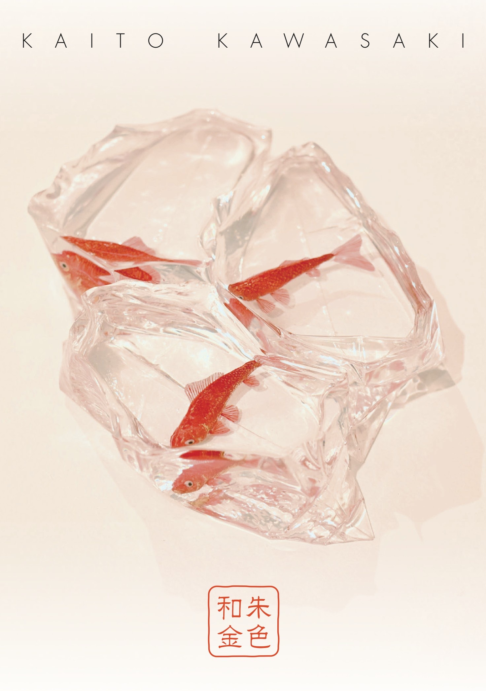
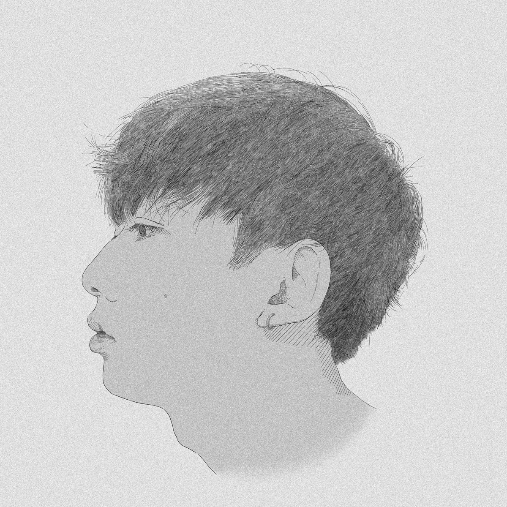

河﨑海斗KAWASAKI KAITO
Conceptコンセプト
生命を模倣するのではない。
生命が現れる場をつくる。
Not imitating life.
Creating where life emerges.
Read More
河﨑海斗は、金魚をつくっているのではない。金魚が金魚として存在するための――水、光、器、素材、見る者の記憶を組み直している。
工芸リアリズムKOGEI REALISM
- I
工芸とは、人間を含めた生態系を表現する営みである。
- II
素材・環境・身体・知覚の関係のなかで、何かが現に立ち上がる。その「現れ」をつくる。
- III
それは技巧による写実ではない。存在の条件そのものを組み直す態度である。
展示情報
EXHIBITIONS
開催情報を確認中…
河﨑海斗展
新宿髙島屋 2階 特設会場（東京・新宿）
初の百貨店個展。朱色和金・紅葉ほか。在廊：7/22・7/28
その他の展示
-
個展「出藍の誉」恵比寿ガーデンプレイス TSUTAYA BOOKSTORE（東京・恵比寿）
-
3人展「MATSURI INORU」Spiral Garden 新丸ビル（東京・丸の内）— 修了作品「錦鯉」を展示
-
個展北斎館（長野・小布施）— 画狂乃蛙をメインに。入場無料
-
個展MEDEL GALLERY SHU HIBIYA（帝国ホテルプラザ1F）— 年間の集大成
代表作品
REPRESENTATIVE WORKS

河﨑海斗
KAITO KAWASAKI
金工作家鋳金KOGEI REALISM
河﨑海斗は、
2000年、
鋳造した金魚をアクリル樹脂の内部に置く。
略歴
- 2000広島県呉市に生まれる
- 2024東京藝術大学 美術学部 工芸科 鋳金専攻 卒業
- 2026東京藝術大学大学院 美術研究科 工芸専攻 鋳金研究分野 修士課程 修了
- 現在東京を拠点に制作。GALLERY KOGURE、GALLERY OPET、藝大アートプラザ、桐美会で作品を取り扱い
受賞歴（抜粋）
- 2022東京藝術大学奨学金制度 安宅賞
- 2024第18回 藝大アートプラザ・アートアワード 審査員特別賞（黒頂天眼）
- 2024平成芸術賞（卒業作品「金魚」）
- 2025第19回 藝大アートプラザ・アートアワード 小学館賞（朱色和金）
- 2026サロン・ド・プランタン賞（修了作品「錦鯉」）
- 2026第20回 藝大アートプラザ・アートアワード 入選（紅葉）
主な展示（抜粋）
- 2024ART FAIR TOKYO（東京国際フォーラム）／ KIAF SEOUL（韓国・ソウル）／ artKYOTO（京都・渉成園）／ 個展「宮原ノ色」（広島・呉）
- 2025ART FAIR TOKYO ／ 大阪・関西万博「にっぽんの宝物祭り」／ 個展「カエルハジメテナク」（東京・恵比寿）
- 2026ART FAIR PHILIPPINES（マカティ）／ ART FAIR TOKYO ／ 3人展「工芸生態系 ─ A World in Kogei ─」（藝大アートプラザ）／ 3人展「MATSURI INORU」（Spiral Garden 新丸ビル）
取り扱いギャラリー
GALLERY KOGURE ／ GALLERY OPET ／ 藝大アートプラザ ／ 桐美会
コンタクト
CONTACT展覧会・作品・取材・共同プロジェクトに関するお問い合わせは、SNSよりご連絡ください。